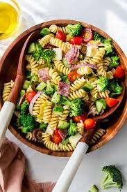

Pasta Salad

Description
A pasta salad consist of pasta of your choice, Italian-style
dressing homemade or store-bought, seasoning mix,
and vegetables
Ingredients
- 1 pound tri-colored spiral pasta
- 1 bottle (16 ounces) bottle italian-style salad dressing
- 6 tablespoons salad seasoning mix
- 2 cups cherry tomatoes, diced
- 1 green bell pepper, chopped
- 1 red bell pepper, diced
- 1/2 yellow bell pepper, chopped
- 1 (2.25 ounce) can black olives, chopped
Directions
- Bring a pot of lightly salted water to a boil. Cook pasta
in the boiling water, stirring occasionally, until tender
yet firm, about 10 to 12 minutes. Rinse under cold water and
drain.
- Whisk Italian dressing and salad spice mix together until
smooth. Combine pasta, tomates, bell peppers, and olives
in a bowl.
- Pour dressing over salad and toss to coat
- Refrigerate salad, 8 hours to overnight